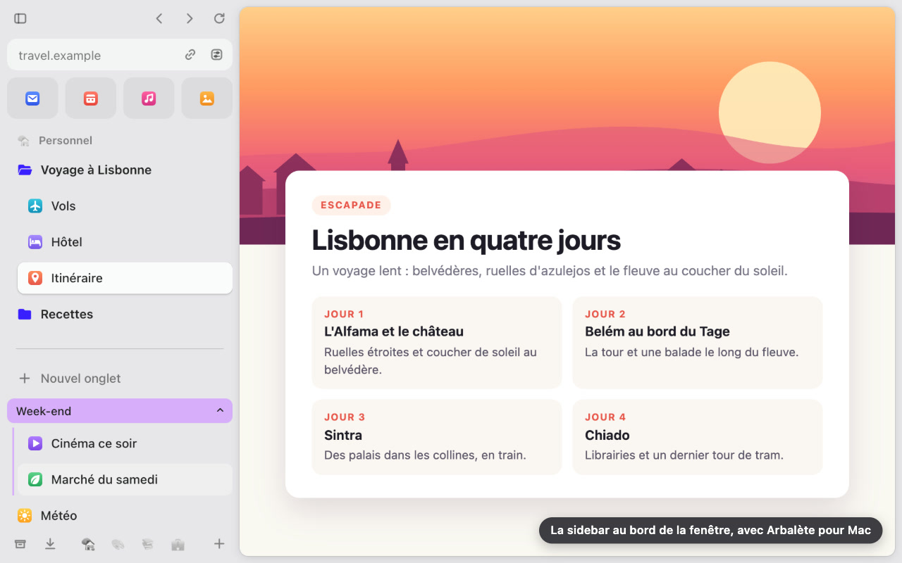
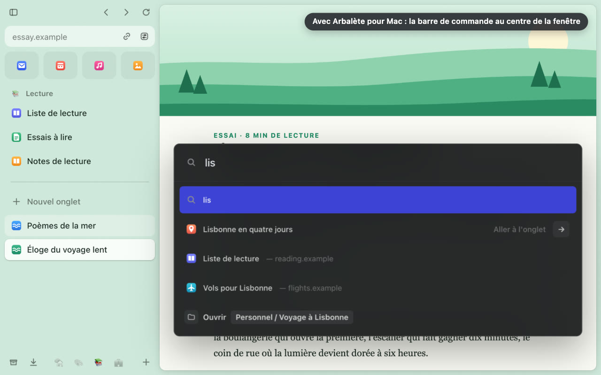

Arbalète
Une barre latérale pour Google Chrome qui garde vos onglets en ordre. Arc, un navigateur, est connu pour la sienne ; Arbalète apporte cette idée à Chrome. Pas besoin de connaître Arc.

Ce qu'elle fait
- Vos sites de tous les jours en tuiles, les Favoris, à un clic.
- Des Spaces, un par projet ou par pan de votre vie, chacun avec ses onglets épinglés, ses dossiers, son icône et sa couleur.
- Today : vos autres onglets, les plus récents en haut, avec les groupes d'onglets de Chrome.
- L'archivage automatique : un onglet que vous n'avez pas regardé depuis 12 heures se ferme et se range dans les onglets archivés, d'où un clic le rouvre. Le délai se change.
- Une barre de commande pour ouvrir une page, chercher, ou retrouver un onglet ouvert, un favori ou une page déjà visitée.
- Les téléchargements de Chrome et les autorisations de chaque site, depuis la barre.
- Tout reste dans Chrome : les Favoris sont des onglets épinglés et des favoris, les Spaces des dossiers de favoris. Retirez Arbalète, tout reste en place.
Sur tout ordinateur, et mieux sur Mac
Sans app, sur tout ordinateur
La barre s'ouvre dans le panneau latéral de Chrome : cliquez sur l'icône d'Arbalète dans la barre d'outils, puis sur Ouvrir la sidebar.
Avec Arbalète pour Mac
Une app gratuite et facultative, pour macOS 13 ou ultérieur : la barre au bord gauche de la fenêtre, en dehors de toute page, la barre de commande au centre de l'écran et un sélecteur d'onglets Ctrl+Tab. L'installer

Confidentialité
Ni compte, ni serveur, ni mesure d'audience, ni publicité. Arbalète n'affiche rien dans les pages web et n'y a pas accès. L'historique, les suggestions de recherche de Google, les téléchargements et les autorisations des sites restent désactivés tant que vous ne les activez pas. Politique de confidentialité
Qui la publie, et le contact
Arbalète est publiée par PopArchi. Une question, un problème ou une demande : écrivez à arbalete@poparchi.com, ou ouvrez un ticket sur GitHub si vous y avez un compte.
© 2026 PopArchi. Tous droits réservés. Licence